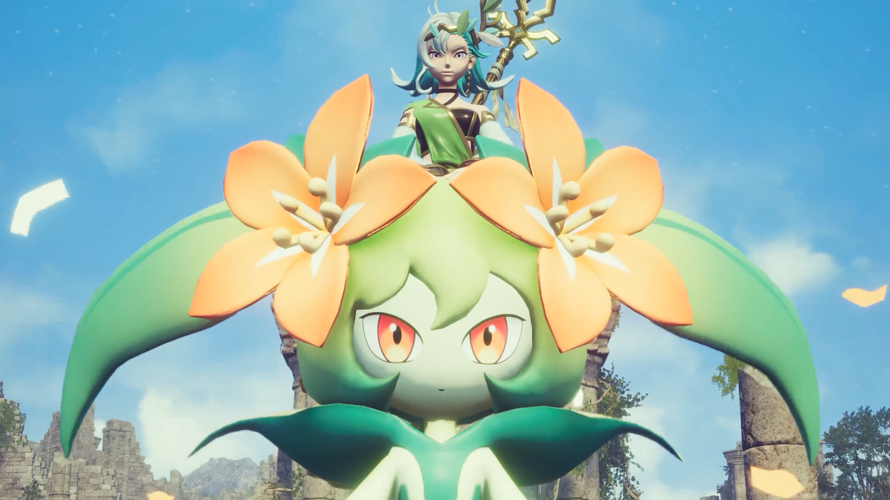
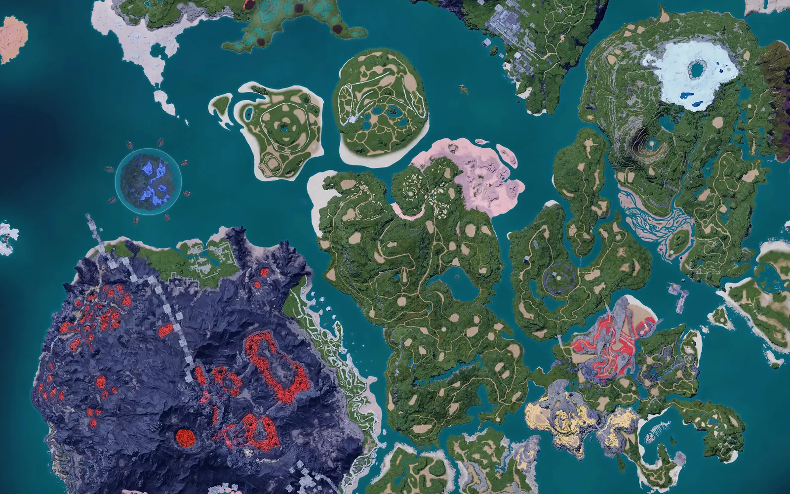

Palworld 1.0.5 · обновлено сегодня
Весь Палпагос
Весь Палпагос
в одном поиске
Палы, боссы, пассивки и разведение. Спроси как другу — ответ без рекламы и регистрации.
Кого поставить на ферму ягод?299палов
411пассивок
91босс
503ответа
Сегодня на острове
Пал дня
Анубис
Земля
6Ручная работа
6Добыча
130Атака


Карта
232 точки на острове
Альфы, башни, торговцы — тап по точке.
Разведение
Кого скрестить?

Башня
Зои и Гриззболт
ур. 10 · слабость — Земля
Ответ за секунду
Кого поставить на ферму ягод?
Лифмунк или Танзи: Посадка 1–2 уровня, дёшево ловятся в начале.
Где поймать? Лучшие пассивки
Пассивки
411 навыков
Дьявольские рукиСкорость работы +90%ВиртуозСкорость работы +75%МастеровитыйСкорость работы +50%ЛегендаАтака +20%
Сравнение
Анубис или Джетрагон?
Два пала рядом, победитель по каждой цифре подсвечен.